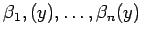
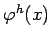
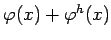
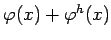

Inhalt Index DeskTop Bronstein

 Lineare Integralgleichungen Fredholmsche Integralgleichung 1. Art Integralgleichungen mit ausgearteten Kernen
Lineare Integralgleichungen Fredholmsche Integralgleichung 1. Art Integralgleichungen mit ausgearteten Kernen


Die Koeffizientenmatrix ist regulär, wenn die linere Unabhängigkeit der Funktionen  vorausgesetzt wird. Die so ermittelte Lösung (11.39a) ist jedoch nicht die einzige Lösung der Integralgleichung. Im Gegensatz zur FREDHOLMschen Integralgleichung 2. Art mit ausgeartetem Kern ist die homogene Integralgleichung immer lösbar. Ist  eine solche Lösung der homogenen Gleichung und  eine Lösung von (11.38a), dann ist auch  eine Lösung von (11.38a).
eine Lösung von (11.38a), dann ist auch  eine Lösung von (11.38a).
Um alle Lösungen der homogenen Gleichung zu bestimmen, wird die Gleichung (11.38c) mit f(x) = 0 betrachtet. Werden die Funktionen  als linear unabhängig vorausgesetzt, dann ist die Gleichung genau dann erfüllt, wenn gilt
als linear unabhängig vorausgesetzt, dann ist die Gleichung genau dann erfüllt, wenn gilt
d.h., jede zu allen Funktionen  orthogonale Funktion
orthogonale Funktion  löst die homogene Integralgleichung.
löst die homogene Integralgleichung.